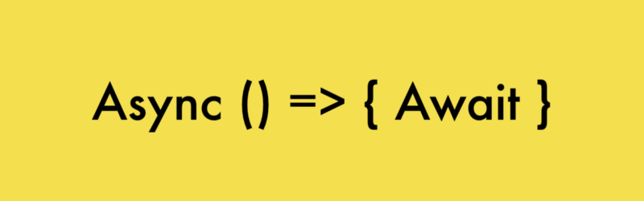

Promise是一种有三个状态的对象（“执行中pending”、“完成resolve”、“失败reject”），构造Promise对象时的构造函数参数是一个有两个参数的函数，这个函数的两个参数分别对应着Promise对象到达两个终点状态resolve或reject时要调用的函数。
一个典型的Promise构造如下👇
1 | new Promise(function(resolve, reject){ |
👆当上面这个新建Promise语句执行时，Promise构造函数中的function(resolve, reject){}会立即被执行，当这个函数在执行“/*执行各类语句a*/”时，Promise对象的状态为“pending”；如果判断条件使函数执行到了resolve函数，则Promise对象状态变为resolve；如果判断条件使函数执行到了reject函数，则Promise对象状态变为reject。
为了让Promise在我们想要的地方执行，一般把Promise加个壳写成这样👇
1 | const myPromise = function (some_value) { |
调用myPromise()的返回值为一个新建的Promise对象。
然后用的时候就这么写👇
1 | myPromise(some_value) |
关于return的注意事项👇
resolve和reject函数从何而来？
答曰：来自then方法或者catch/final方法。
在上面的Promise例子中，如何告诉myPromiseresolve和reject都是什么函数？
正确姿势1👇
1 | function resolve(v/*对应上面例子中的变量v*/){/*对v做点什么*/} |
👆这样resolve和reject就会在构造myPromise的那个函数里面被执行了。这就相当于myPromise执行完成之后把某个结果v传递给了resolve函数。然后这个then的返回值就是那个function (resolve, reject) {}的返回值。
正确姿势2👇
1 | function resolve(v/*对应上面例子中的变量v*/){/*对v做点什么*/} |
👆起始then里面可以不用写reject用的那个函数，reject函数可以写在.catch方法里面，就像try{}catch(){}错误处理一样，如果删了上面那个.catch(reject)，当出错时new Error(/*某个错误e*/)会真的作为错误被抛出来。
myPromise(some_value)的返回值是一个Promise对象，而myPromise(some_value).then(resolve,reject)的返回值则是myPromise对象构造时里面那个function (resolve, reject) {}的返回值。
在上面这个例子中，myPromise(some_value).then(resolve,reject)和myPromise(some_value).then(resolve).catch(reject)的返回值都为undefined因为myPromise里面的function (resolve, reject) {}没有返回值。
注意，调用resolve或reject并不会终结 Promise 的参数函数的执行。
1 | new Promise((resolve, reject) => { |
上面代码中，调用
resolve(1)以后，后面的console.log(2)还是会执行，并且会首先打印出来。这是因为虽然看起来resolve(1)在console.log(2)的前面，但是这其实只是告诉了Promise当resolve时要执行resolve(1)，这个resolve(1)语句会被保留直到console.log(2)执行完并且函数退出后才会触发。一般来说，调用
resolve或reject以后，Promise的使命就完成了，后继操作应该放到then方法里面，而不应该直接写在resolve或reject的后面。所以，最好在它们前面加上return语句，这样就不会有意外。
就像这样👇
1 | const myPromise = function (some_value) { |
这时再调用myPromise(some_value).then(resolve,reject)和myPromise(some_value).then(resolve).catch(reject)的话就会有返回值了，因为myPromise里面的function (resolve, reject) {}有了返回值。并且按照上面那个写法，myPromise(some_value).then(resolve,reject)和myPromise(some_value).then(resolve).catch(reject)的返回值就是resolve(/*上面的语句中产生的某个变量v*/)或者reject(new Error(/*某个错误e*/))
后面所有的代码都默认Promise在resolve或reject处返回值。
nodejs高玩的骚操作👇
resolve函数返回一个Promise
先来个简单的，让then返回一个新的myPromise
1 | const myPromise = function (some_value) { |
然后因为第一个then的返回值变成一个Promise了，它又可以再then一次，所以我们就可以进一步这么写👇
1 | function resolve(v/*对应上面例子中的变量v*/){/*对v做点什么*/} |
或者这么写👇
1 | myPromise(value1).then(function(v){ |
这相当于是把myPromise(value1)的结果传递给了又一个myPromise(v)，然后再把myPromise(v)的结果传递给resolve(v)；并且myPromise(v)在myPromise(value1)到resolve状态了之后才会执行。
出错了咋办？
注意到上面两个例子中的第一个then没有指定reject，这时如果有某一个myPromise运行到reject了，后面的then都不会执行直到这个reject碰到了某个then(resolve,reject)或者catch(reject)。如果后面没有then(resolve,reject)或者catch(reject)了？那就成为一个被抛出的错误。
骚操作x5
连6个myPromise👇
1 | myPromise(v1).then(function(v2){ |
套4个myPromise👇
1 | myPromise(v1).then(function(v2){ |
嵌套和连接不一样的地方就在于，嵌套可以综合前面各个Promise的返回值，连接只能获取前面一个。myPromise2和myPromise3定义如下👇。
1 | const myPromise2 = function (v2,v3) { |
async/await

随着 Node 7 的发布，越来越多的人开始研究据说是异步编程终级解决方案的 async/await。async 是“异步”的简写，而 await 可以认为是 async wait 的简写。所以应该很好理解 async 用于申明一个 function 是异步的，而 await 用于等待一个异步方法执行完成。
如果需要通过 await 来调用一个 async 函数，那这个调用的外面必须得再包一个 async 函数，然后……进入死循环，永无出头之日……
async
一个单独的async有什么用？请看👇
1 | async function testAsync(i) { |
输出👇
1 | Promise { 'hello async' } |
和一个错误👇
1 | UnhandledPromiseRejectionWarning: Error: Oops! |
看到输出就恍然大悟了—— 输出的是一个 Promise 对象。
这样我们就可以理解了，async把一个函数变成了Promise，并将return的内容放到了resolve中，throw的内容放到了reject中，它就是一种更加方便而直观地定义Promise的方法。因此，上面这个函数就应该这样用：
1 | testAsync(1).then((r)=>{console.log(r)}).catch((e)=>{console.log(e)}); |
await
await的使用分两种情况，第一种是await的表达式不是Promise时，这时有没有await都一样。比如下面这段代码输出3👇
1 | async function test(i) { |
而第二种是await的表达式是Promise的时候，这时它会把Promise中resolve的输入作为结果返回，而将reject的输入作为错误抛出。比如上一节用then链调用的async函数的代码等效于👇
1 | async function test() { |
从上面可以看出，加了await的Promise就像一个普通的函数一样，立即返回了他的处理结果，await可以看作是一种调用Promise的简便方法。但是我们知道，大多数情况下，resolve在Promise中是异步调用的，即它不会立即返回，那await是怎么实现把一个Promise的resolve立即返回的呢？很简单，它阻塞了后面的代码直到resolve返回。这相当于把await后面的代码全部放到then链定义的resolve里面了，也就是说，上面的代码等效于👇
1 | function test() { |
比起async/await代码，Promise代码难度不少，不是吗？
关于try/catch的位置，此处有一个易错点，比如像这样把try/catch放到外面来的做法是捕捉不到我们想要的错误的👇
1 | async function test() { |
为什么捕捉不到也很好理解，因为前面标了async的函数返回的是一个Promise，它的错误要在.catch((e)=>{})里面或者用await才能捕捉到，就像这样👇
1 | test().catch((e)=>{console.log("catched!");console.log(e)}) |
这里还有一个注意点，那就是异步代码是不能向同步代码抛出错误的，比如上面那段进入到catch中的错误不能再抛出到外层的同步代码中，比如这段代码也是不能正确捕捉到错误的👇
1 | try{ |
即使用事件触发也是一样不能捕捉的
1 | const events = require("events") |
异步代码的错误只能用异步代码捕捉到。